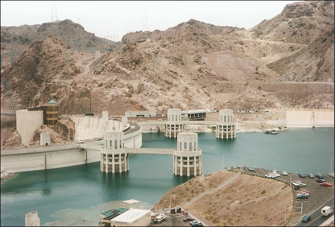
.
The Hoover Dam is a concrete arch-gravity dam in the Black Canyon of the Colorado River, on the border between Arizona and Nevada. Constructed between 1931 and 1936 during the Great Depression, it was dedicated in September 1935 by President Franklin D. Roosevelt. Its construction was the result of a massive effort involving thousands of workers, and cost over one hundred lives. Originally known as Boulder Dam from 1933, it was officially renamed Hoover Dam, for President Herbert Hoover, by a joint resolution of Congress in 1947.
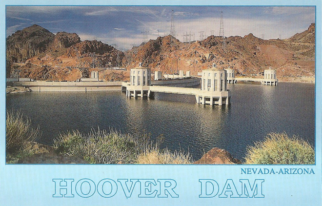
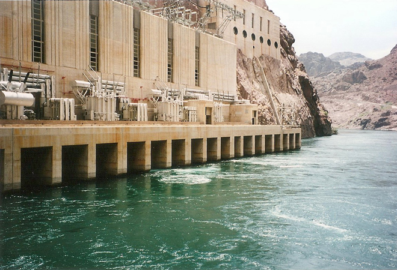
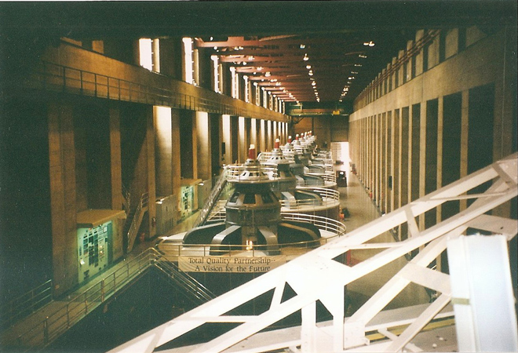
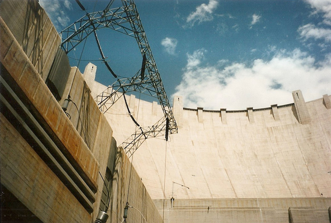
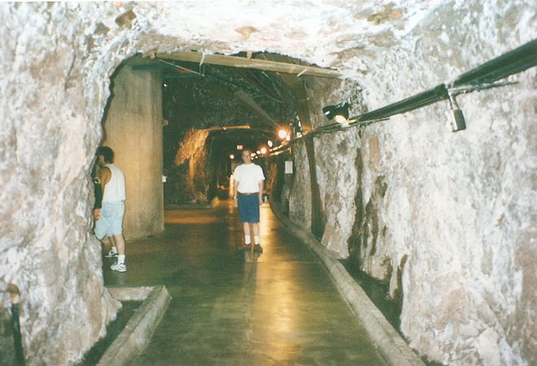
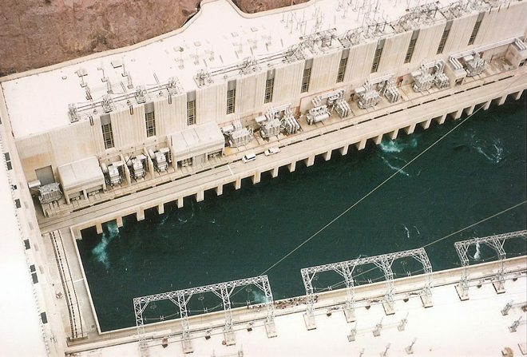
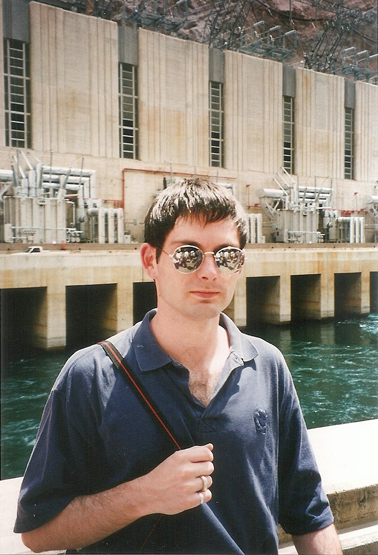
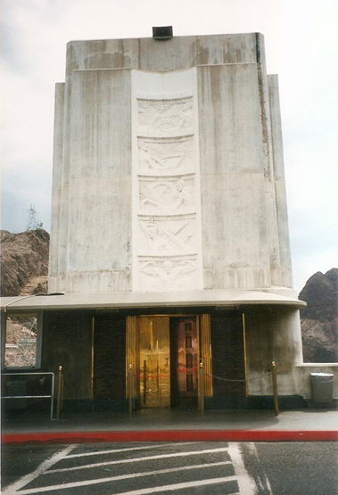
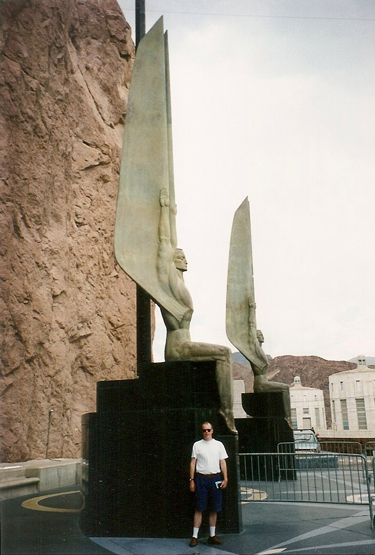
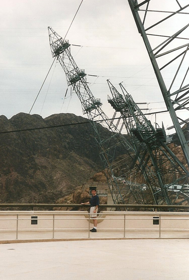
The initial plans for the facade of the dam, the power plant, the outlet tunnels and ornaments clashed with the modern look of an arch dam. The Bureau of Reclamation, more concerned with the dam's functionality, adorned it with a Gothic-inspired balustrade and eagle statues. This initial design was criticized by many as being too plain and unremarkable for a project of such immense scale, so Los Angeles-based architect Gordon B. Kaufmann, then the supervising architect to the Bureau of Reclamation, was brought in to redesign the exteriors.
Kaufmann greatly streamlined the design and applied an elegant Art Deco style to the entire project. He designed sculpted turrets rising seamlessly from the dam face and clock faces on the intake towers set for the time in Nevada and Arizona - both states are in different time zones, but since Arizona does not observe Daylight Saving Time, the clocks display the same time for more than half the year.
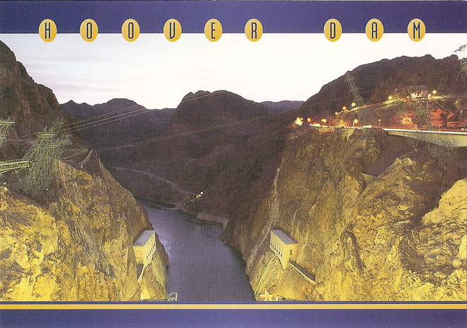
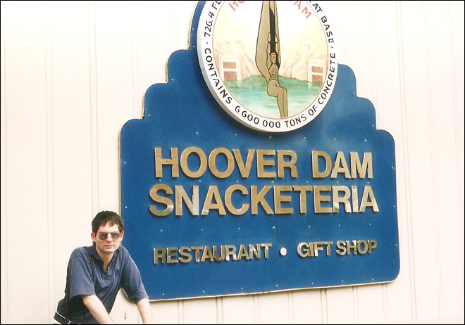
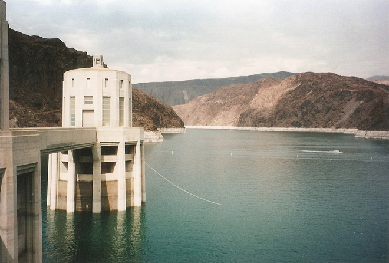
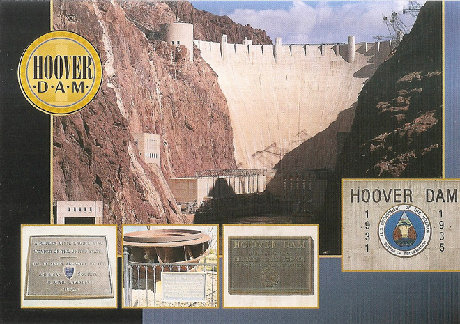
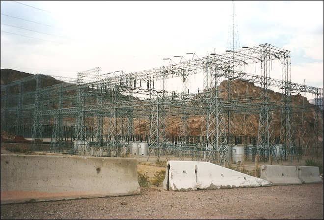
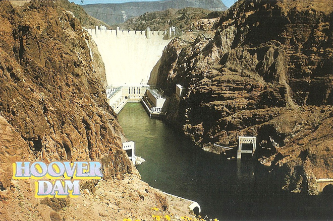